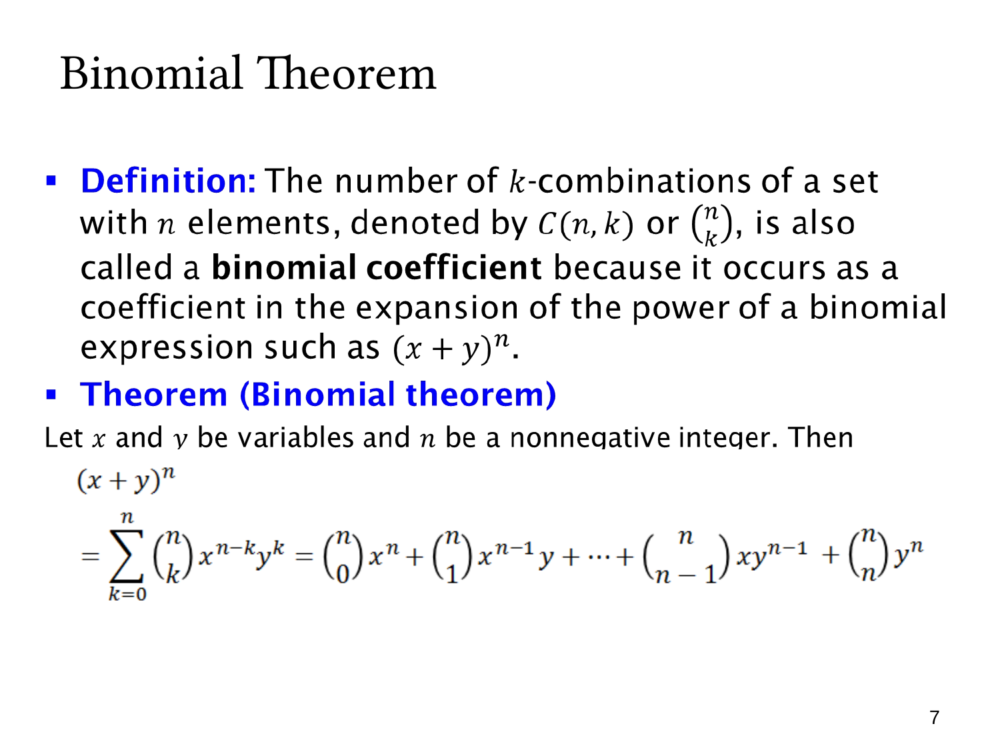

L1.7 · 第 7 页讲解原文
查看这一页课件

二项式定理
组合数 C(n,k)=(kn) 也叫二项式系数，因为它正好出现在二项式幂的展开式中。对于非负整数 n，
(x+y)n=k=0∑n(kn)xn−kyk.
求和符号表示把 k=0,1,…,n 的各项相加，总共 n+1 项。k 从零递增时，x 的指数从 n 递减到零，y 的指数从零递增到 n；每项两个指数之和都为 n。
展开首尾为
(0n)xn+(1n)xn−1y+⋯+(n−1n)xyn−1+(nn)yn.
首尾系数均为 1，因为全选 x 或全选 y 只有一种方式。
一般项的含义是：n 个括号中选 k 个贡献 y，其余贡献 x，有 (kn) 种位置选择。所以系数与指数有明确对应。
例如 n=4 时系数为 1,4,6,4,1。n=0 时空乘积为 1，右边也只有一项 (00)=1，约定一致。
本页定理针对非负整数次幂的有限展开；不能把它原样作为任意实数指数的有限多项式公式。